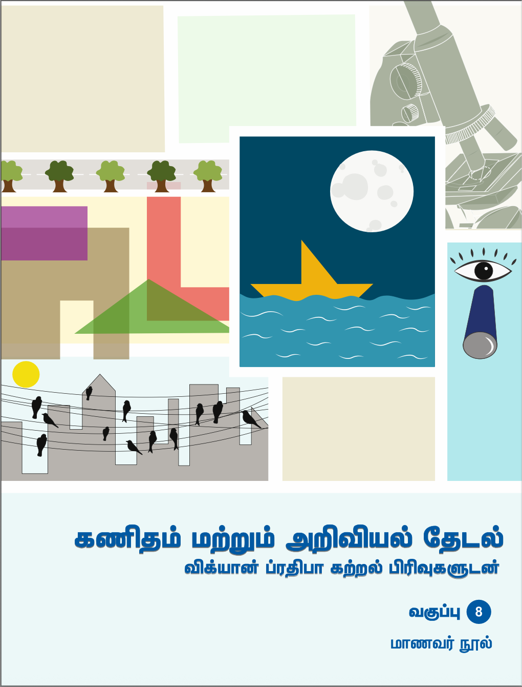
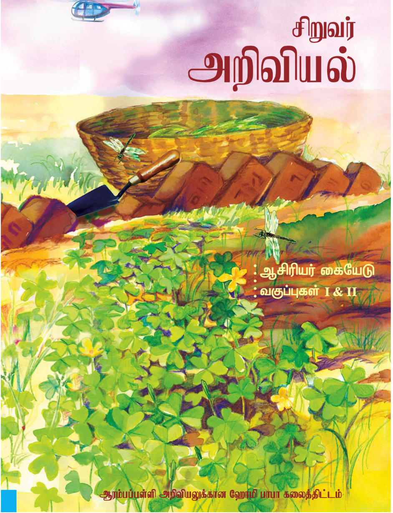
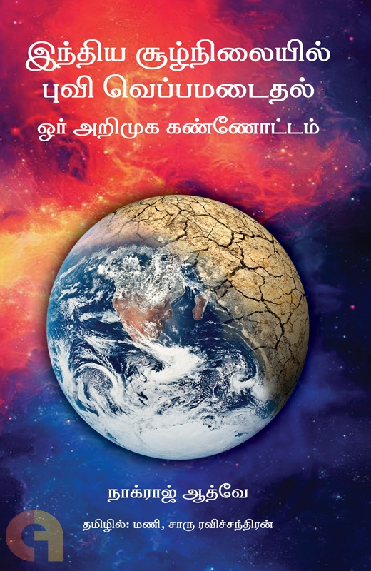

Translations
Math and Science

Vigyan Pratibha Class 8 Teacher's Book
Learning Materials for class 8 science and math teachers. Accessing these materials requires a login to the website. You can get the individual learning units, not the entire book.
ISBN:

Vigyan Pratibha Class 8 Student's Book
Learning Materials for class 8 science and math students. You can get the individual learning units, not the entire book.
ISBN:

Small Science Class 1/2 Teacher's Book
Teacher's book for class 1/2, a part of the Small Science curicullum developed by HBCSE.
ISBN: 978-81-97440-9-6

இந்திய சூழ்நிலையில் புவி வெப்பமடைதல்: ஓர் அறிமுக கண்ணோட்டம்
Written by Nagraj Adve. Translated this book with Charu Ravichandran.
Non-Fiction
நேர்காணல் - "என்னுடைய படங்களில் வரும் கதாபாத்திரங்களுடன் நானும் மாறியுள்ளேன்"
Translated this interview of one of my favourite film directors in 2023.
கட்டுரை - "பைத்தியநிலை குறித்து"
Translated this essay by Arthur Schopenhaeur in 2024. From doing this I realised that there was a great influence of eastern thought on the western thinkers and that societal pressures played a major role in mental illness.
சொற்பொழிவு - "புதிய வாழ்க்கை தத்துவம்"
(2025) Translation of a speech by Meghnad Saha, the scientist who revolutionized astrophysics and was elected to the parliament.